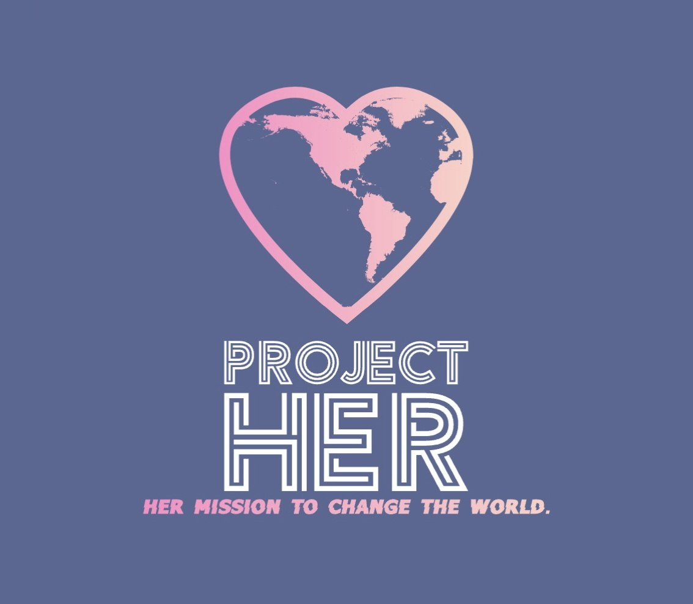

Washington University in St. Louis · Class of 2029
Double major: Psychological & Brain Sciences and Political Science · Minor: Drama
Research, community-engaged scholarship, and academic presentations.

Chief Operating Officer, ProjectHER, Inc. · Founder & Founding President, ProjectHER Collegiate at WashU
Mentorship, education, leadership development, career exploration, professional development, and community engagement for Black girls and young women.
Explore ProjectHER ↗Read essays, reflections, and commentary on my Substack.
Read my Substack ↗A collection of my published writing on psychology, politics, culture, and the human experience.
An expanding collection of internships, fellowships, research programs, leadership pipelines, nonprofit resources, and civic engagement opportunities.
For research collaborations, nonprofit partnerships, speaking engagements, professional opportunities, and conversations.
Email me